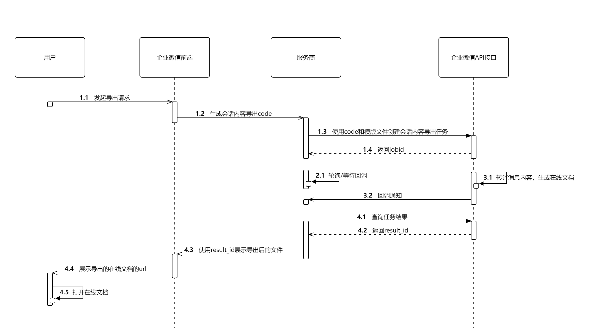

目录
企业微信数据专区功能不提供“部门名”、“姓名”、“别名”、“群名”、“客户名”等以及消息的具体内容，代替以“部门ID”、“userID”、“群聊ID”、“消息ID”和“客户ID”。
应用需要提供“会话内容导出”的功能给到用户时，其导出的文件中会含有“部门名”、“姓名”、“别名”、“群名”、“客户名”以及消息的具体内容，此时需要通过接口提交导出任务，在导出的文件中由企业微信进行转译，转译成正确的内容之后展示给用户。
企业用户在会话展示组件中通过点击会话内容导出，发起导出操作，获取导出结果文件流程如图示。

在文件中需要替换的位置构造转译模版，其中通讯录相关的ID转译参考通讯录ID转译概述，群聊名称和消息内容的转译模版如下：
$departmentName=DEPARTMENT_ID$ $userName=USERID$ $userAlias=USERID$ $userAliasOrName=USERID$ $chatName=CHATID$ $msgContent=MSGID/SECRET-KEY$ $externalUserName=EXTERNAL_USERID$点击复制
譬如，
将$departmentName=1$替换成部门id为1对应的部门名，如“企业微信部”；
将$userName=lisi007$替换成userid为lisi007对应的用户姓名，如“李四”；
将$userAlias=lisi007$替换成userid为lisi007对应的用户别名，如“lisi”；
将$userAliasOrName=lisi007$替换成userid为lisi007对应的用户别名或姓名，别名优先级高于姓名，如"lisi"；
将$chatName=xxxxx$替换成群聊ID为xxxxx对应的群聊名称；
将$msgContent=xxxxx/yyyyyy$替换成消息ID为xxxxx对应的消息内容，其中获取会话记录接口返回的这条消息对应的 encrypted_secretkey 字段进行解密得到的密钥为yyyyyy；
将$externalUserName=xxxxx$替换成客户ID为xxxxx对应的客户名称；如果当前企业是K12教育行业，Id为家长或者学生的externalUserId，则展示家长或者学生的名称，若非家长或者学生，则展示“非学校家长”。若员工对客户有设置备注名，则展示“备注名(名称）”；若名称和备注名一致时仅展示“备注名”；多个员工给客户有备注的，展示最早添加的员工给客户的备注。
若输入的模板不符合语法、不在权限范围内、消息ID对应的密钥不正确或无效的群聊ID或者消息ID，则不替换该项内容，保留原样
转译userAlias时，如果用户没有别名，则不替换该项内容，保留原样
转译userAliasOrName时，如果用户有别名，则替换为别名；否则，将替换为姓名
支持企业部门id。
支持企业员工id。
支持转译内部群和外部群的名称；
不包括单聊；
对于无名称的企业内部群聊，展示为未命名内部群；
对于无名称的企业客户群聊，展示为未命名客户群；
对于非企业客户群，展示为非企业客户群。
| 消息类型 | 对应转译结果 |
|---|---|
| 文本消息 | 文本消息的内容 |
| 图片消息 | [图片] |
| 撤回消息 | 撤回了一条消息 |
| 同意会话聊天内容 | 同会话展示组件展示的内容一致 |
| 图文消息 | 图文消息所对应的链接 |
| 图文混排消息 | 文本的内容，涉及到图片的部分用[图片]代替 |
| 链接消息 | 链接消息所对应的链接 |
| 其他 | 展示对应的消息类型名称，如[小程序]、[红包] |
其他特殊情况转译结果说明：
企微后台系统失败->消息获取失败
msgid不存在或者过期->消息已过期，消息内容无法展示
SECRET-KEY错误->消息密钥错误
支持企业的客户；
支持客户群中非企业客户的外部联系人（chatid/externalUserId）；若当前企业为K12教育行业，externalUserId为学生或者家长的externalUserId，则会转译为家长或者学生的名称；
不满足以上两个条件且非K12教育行业企业，展示为非企业客户；
不满足以上两个条件且为K12教育行业企业，展示为非学校家长。
每企业每天会话导出次数不可超过1千次
可通过此接口，创建专区消息内容导出异步任务。
权限说明
使用会话展示组件传过来的code才可以调用，一个code只能创建一次任务
支持Word(doc/docx)、Excel(xls/xlsx)和Txt(txt)格式的文件
文件中需要被转译的消息ID不能超过100000条
转译后的文件大小不能超过64MB
| 应用类型 | 权限要求 |
|---|---|
| 自建应用 | 需具备「数据与智能专区权限」 |
| 代开发应用 | 需具备「数据与智能专区权限」 |
| 第三方应用 | 需具备「数据与智能专区权限」 |
请求方法
通过SDK调用，具体方式参考专区程序使用指引。
请求接口名：
create_chatdata_export_job
请求示例：
{ "code":"xxxxx", "media_id":"xxxxx" }点击复制
参数说明：
| 参数 | 必须 | 说明 |
|---|---|---|
| access_token | 是 | 调用接口凭证 |
| code | 是 | 从会话展示组件获取的code，只能使用一次，有效时间为五分钟 |
| media_id | 是 | 导出内容的模板文件media_id，可以调用上传临时素材接口获取 必须是以 file类型上传的文件支持Word(doc/docx)、Excel(xls/xlsx)和Txt(txt)格式的文件 |
返回结果
{ "errcode": 0, "errmsg": "ok", "jobid": "xxxxx" }点击复制
返回字段说明：
| 字段名 | 说明 |
|---|---|
| errcode | 返回码 |
| errmsg | 对返回码的文本描述内容 |
| jobid | 所创建任务的任务id |
可通过此接口，获取消息内容导出任务的处理状态。
权限说明
使用创建会话内容导出任务接口获得的jobid调用
| 应用类型 | 权限要求 |
|---|---|
| 自建应用 | 需具备「数据与智能专区权限」 |
| 代开发应用 | 需具备「数据与智能专区权限」 |
| 第三方应用 | 需具备「数据与智能专区权限」 |
请求方法
通过SDK调用，具体方式参考专区程序使用指引。
请求接口名：
get_chatdata_export_job_status
请求示例：
{ "jobid":"xxxxx" }点击复制
参数说明：
| 参数 | 必须 | 说明 |
|---|---|---|
| jobid | 是 | 创建会话内容导出任务接口获得的任务id |
返回结果
{ "errcode": 0, "errmsg": "ok", "status": 3, "result_id": "xxxx", "result_errcode": 0, "result_errmsg": "ok" }点击复制
返回字段说明：
| 字段名 | 说明 |
|---|---|
| errcode | 返回码 |
| errmsg | 对返回码的文本描述内容 |
| status | 任务当前状态， 1、等待开始 2、进行中 3、已完成 |
| result_id | 结果id，任务处于已完成状态，且任务返回码（非接口返回码）为0时返回，用于在会话展示组件中展示结果。该结果只可用会话展示组件的 ww-open-result-link 模板组件进行展示。14天内有效。 |
| result_errcode | 任务返回码，任务处于已完成状态时返回，表示任务的执行结果 |
| result_errmsg | 任务返回信息，任务处于已完成状态时返回，对任务返回码的文本描述内容 |